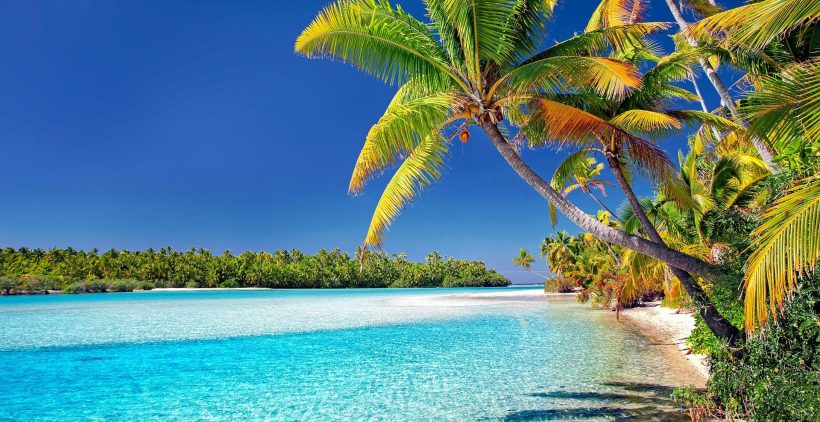
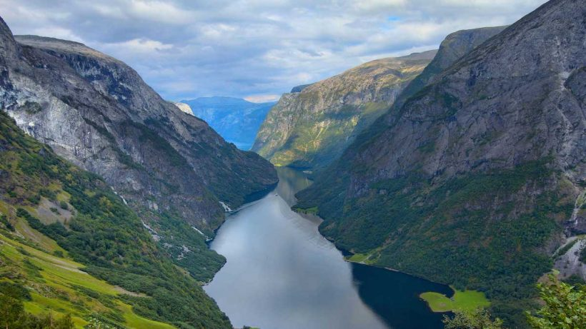
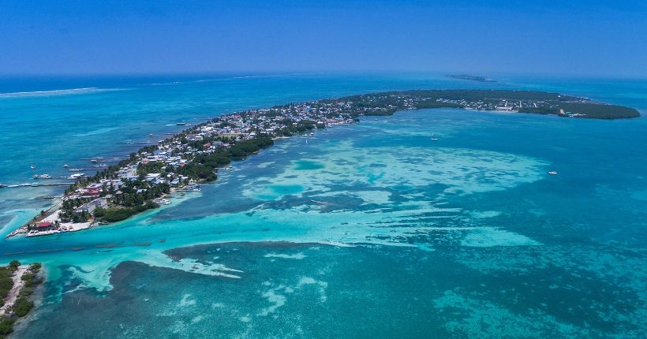

Países Interessantes para Visitar
Referência:
Ilhas Cook
As Ilhas Cook lideram a lista da Lonely Planet e não é por acaso. Suas 15 ilhas se espalham por uma área bem vasta abrigando montanhas, lagoas circundadas por recifes de corais e pequenas ilhotas arenosas. O país é famoso por seus vários locais para a prática de mergulho e snorkel.
Noruega
A Noruega é um país escandinavo que abrange montanhas, geleiras e fiordes imensos. Oslo, a capital, é uma cidade cheia de áreas verdes e museus, e dá até para ver navios vikings preservados do século IX exibidos no Museu do Navio Viking de Oslo. O país também é famoso pela pesca, pelas trilhas e pelo esqui, especialmente no resort olímpico de Lillehammer.
Belize
Quer explorar as ruínas maias, nadar em águas azuis e ver a incrível vida selvagem? Belize tem tudo isso e muito mais! O país é famoso também pelo Grande Buraco Azul, uma caverna submarina com 129 metros de profundidade que atrai turistas e mergulhadores do mundo todo! E o mergulho na costa do país nem precisa ser de cilindro… com snorkel já é possível avistar tartarugas e corais coloridíssimos!
Eslovênia
A Eslovênia é conhecida pelas montanhas, pelas estações de esqui e pelos lagos. Graças ao pequeno tamanho do país, os viajantes podem conhecer uma ampla variedade de lugares em pouco tempo, desde o deslumbrante Lago Bled até a agitada capital Ljubljana. Entre os destinos há também a cidade de Bled, que tem uma ilhota com uma igreja e um castelo medieval no topo de um penhasco.